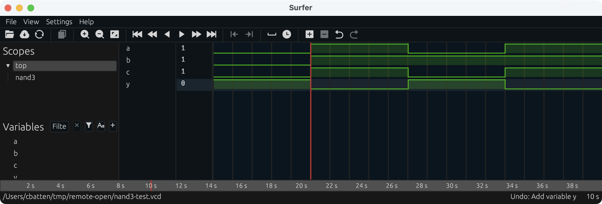
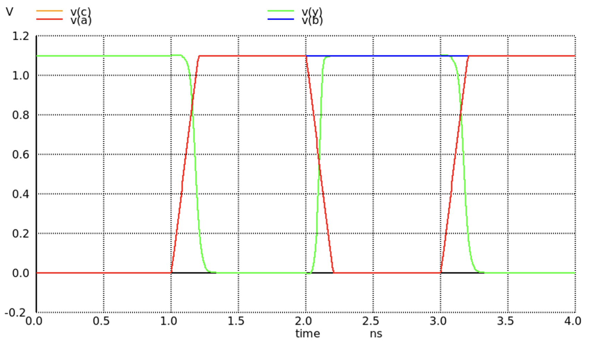

ECE 6745 Tutorial 5: ASIC Standard Cells
A standard-cell library is a collection of combinational and sequential logic gates that adhere to a standardized set of logical, electrical, and physical policies. For example, all standard cells are usually the same height, include pins that align to a predetermined vertical and horizontal grid, include power/ground rails and nwells in predetermined locations, and support a predetermined number of drive strengths. A standard-cell-based ASIC toolflow involves using automated tools to transform register-transfer-level (RTL) designs into placed and routed standard cells on a chip. This tutorial will explore the specific standard-cell library we will use in this course along with the various "views" of the standard-cell library. This tutorial assumes you have already completed the tutorials on Linux, Git, and Verilog.
The first step is to access ecelinux. Use VS Code to log into a
specific ecelinux server and then use Microsoft Remote Desktop to log
into the same server. Once you are at the ecelinux prompt, source the
setup script, source the GUI setup script, clone this repository from
GitHub, and define an environment variable to keep track of the top
directory for the project.
% source setup-ece6745.sh
% source setup-gui.sh
% mkdir -p $HOME/ece6745
% cd $HOME/ece6745
% git clone git@github.com:cornell-ece6745/ece6745-tut05-asic-stdcells tut05
% cd tut05
% TOPDIR=$PWD
1. FreePDK45 Process Design Kit
Before you can gain access to a standard-cell library, you need to gain access to a "physical design kit" (PDK). A PDK includes all of the design files required for full-custom circuit design for a specific technology. So this will include a design-rule manual as well as SPICE circuit models for transistors and other devices. Gaining access to a real PDK is difficult. It requires negotiating with the foundry and signing multiple non-disclosure agreements. So in this course we will be using the FreePDK45 PDK:
This is an open PDK for a "fake" technology. It was created by universities using publically available data on several different commercial 45nm processes. This means you cannot actually tapeout a chip using this PDK, but the technology is representative enough to provide reasonable area, energy, and timing estimates for research and teaching purposes. You can find the FreePDK45 PDK installed here:
2. NanGate Standard-Cell Library
A standard-cell designer will use the PDK to implement the standard-cell
library. A standard-cell designer will usually create a high-level
behavioral specification (in Verilog), circuit schematics (in SPICE), and
the actual layout (in .gds format) for each logic gate. The
standard-cell-based ASIC tools do not actually use these low-level
implementations, since they are actually too detailed. Instead these
tools use abstract views of the standard cells, which capture logical
functionality, timing, geometry, and power usage at a much higher level.
Just like with a PDK, gaining access to a real standard-cell library is difficult. It requires gaining access to the PDK first, negotiating with a company which makes standard cells, and usually signing more non-disclosure agreements. In this course, we will be using the Nangate 45nm standard-cell library which is based on the open FreePDK45 PDK.
Nangate is a company which makes a tool to automatically generate standard-cell libraries, so they have made this library publically available a way to demonstrate their tool. Since it is an open library it is a great resource for research and teaching. Even though the standard-cell library is based on a "fake" 45nm PDK, the library provides a very reasonable estimate of a real commercial standard library in a real 45nm technology. In this section, we will take a look at both the low-level implementations and high-level views of the Nangate standard-cell library.
A standard-cell library distribution can contain gigabytes of data in thousands of files. For example, here is the distribution for the Nangate standard-cell library.
To simplify using the Nangate standard-cell library in this course, we have created a much smaller set of well-defined symlinks which point to just the key files we want to use in this course. We call this collection of symlinks an "ASIC design kit" (ADK). Here is the directory which contains these symlinks.
% cd ${ECE6745_STDCELLS}
% ls
pdk-models.sp # spice models for transistors
rtk-stream-out.map # gds layer map
rtk-tech.lef # interconnect technology information
rtk-tech.tf # interconnect technology information
rtk-typical.captable # interconnect technology information
stdcells.spi # circuit schematics for each cell
stdcells.gds # layout for each cell
stdcells.v # behavioral specification for each cell
stdcells-lpe.spi # circuit schematics with parasitics for each cell
stdcells.lib # abstract logical, timing, power view for each cell (typical)
stdcells-bc.lib # best case .lib
stdcells-wc.lib # worst case .lib
stdcells.lef # abstract physical view for each cell
stdcells.db # binary compiled version of .lib file
stdcells.mwlib # Milkyway database built from .lef file
stdcells-databook.pdf # standard-cell library databook
klayout.lyp # layer settings for Klayout
A standard-cell library will always include a databook, which is a document that describes the details of every cell in the library. Take a few minutes to browse through the Nangate standard-cell library databook located on the course webpage here:
2.1. Verilog Behavioral View
Let's begin by looking at the Verilog behavioral view for a 3-input NAND standard cell which is named NAND3_X1.
% less -p NAND3_X1 ${ECE6745_STDCELLS}/stdcells.v
module NAND3_X1 (A1, A2, A3, ZN);
input A1;
input A2;
input A3;
output ZN;
not(ZN, i_8);
and(i_8, i_9, A3);
and(i_9, A1, A2);
specify
(A1 => ZN) = (0.1, 0.1);
(A2 => ZN) = (0.1, 0.1);
(A3 => ZN) = (0.1, 0.1);
endspecify
endmodule
Note that the Verilog implementation of the 3-input NAND standard cell
looks nothing like the Verilog we used in ECE 4750. This cell is
implemented using Verilog primitive gates (e.g., not, and) and it
includes a specify block which is used for advanced gate-level
simulation with back-annotated delays.
Let's use iverilog to simulate the Verilog behavorial view of the
3-input NAND standard cell. Take a look at the provided Verilog test
bench.
The test bench looks as follows.
`include "/classes/ece6745/install/adks/freepdk-45nm/stdview/stdcells.v"
module top();
logic a;
logic b;
logic c;
logic y;
NAND3_X1 nand3( a, b, c, y );
initial begin
$dumpfile("nand3-test.vcd");
$dumpvars;
a = 0; b = 0; c = 0;
#10;
$display( "a=%b, b=%b, c=%b, y=%b", a, b, c, y );
a = 1; b = 1; c = 1;
#10;
$display( "a=%b, b=%b, c=%b, y=%b", a, b, c, y );
a = 0; b = 1; c = 0;
#10;
$display( "a=%b, b=%b, c=%b, y=%b", a, b, c, y );
a = 1; b = 1; c = 1;
#10;
$display( "a=%b, b=%b, c=%b, y=%b", a, b, c, y );
end
endmodule
The test bench simply tries four different combinations of input values. Run the simulation and view the result using Surfer.
% cd $TOPDIR/sim
% iverilog -g2012 -s top -o nand3-test nand3-test.v
% ./nand3-test
% code nand3-test.vcd
The waveforms should look similar to what is shown below. Because this is a Verilog behavioral view all signals change immediately without any kind of delay.

2.2. SPICE Schematic View
Now that we understand the Verilog behavioral view, let's look at how we would implement this same standard cells at the transistor level. We can look at the SPICE schematic view for a 3-input NAND cell (NAND3_X1).
% less -p NAND3_X1 ${ECE6745_STDCELLS}/stdcells.spi
.SUBCKT NAND3_X1 A1 A2 A3 ZN VDD VSS
*.PININFO A1:I A2:I A3:I ZN:O VDD:P VSS:G
*.EQN ZN=!((A1 * A2) * A3)
M_i_2 net_1 A3 VSS VSS NMOS_VTL W=0.415000U L=0.050000U
M_i_1 net_0 A2 net_1 VSS NMOS_VTL W=0.415000U L=0.050000U
M_i_0 ZN A1 net_0 VSS NMOS_VTL W=0.415000U L=0.050000U
M_i_5 ZN A3 VDD VDD PMOS_VTL W=0.630000U L=0.050000U
M_i_4 VDD A2 ZN VDD PMOS_VTL W=0.630000U L=0.050000U
M_i_3 ZN A1 VDD VDD PMOS_VTL W=0.630000U L=0.050000U
.ENDS
For students with a circuits background, there should be no surprises
here, and for those students with less circuits background we will cover
basic static CMOS gate design later in the course. Essentially, this
schematic includes three NMOS transistors arranged in series in the
pull-down network, and three PMOS transistors arranged in parallel in the
pull-up network. The PMOS transistors are larger than the NMOS
transistors (see W= parameter) because the mobility of holes is less
than the mobility of electrons.
Let's use ngspice to simulate the SPICE schematic view of the 3-input NAND standard cell. Take a look at the provided SPICE test bench.
Although it is not too important for you to understand how to write a SPICE test bench, it can still be fun to look at one.
* Simple NAND3_X1 simulation
* ------------------------------------------------------------------------
.param VDD='1.1V'
.temp 70
.inc "/classes/ece6745/install/adks/freepdk-45nm/stdview/pdk-models.sp"
.inc "/classes/ece6745/install/adks/freepdk-45nm/stdview/stdcells.spi"
* Instantiate a voltage supply, standard cell, and output load
* ------------------------------------------------------------------------
Vdd vdd gnd VDD
X1 a b c y vdd gnd NAND3_X1
Cload y gnd 7fF
* Instantiate three input sources
* ------------------------------------------------------------------------
A1 [a_ b_] nand3_source
.model nand3_source d_source (input_file="nand3-source.txt")
Aa [a_] [a] dac_a
.model dac_a dac_bridge (out_low=0V out_high='VDD' t_rise=0.2ns t_fall=0.2ns)
Ab [b_] [b] dac_b
.model dac_b dac_bridge (out_low=0V out_high='VDD' t_rise=0.2ns t_fall=0.2ns)
Ac [b_] [b] dac_c
.model dac_c dac_bridge (out_low=0V out_high='VDD' t_rise=0.2ns t_fall=0.2ns)
* Run a simulation
* ------------------------------------------------------------------------
.ic V(y)=VDD
.tran 0.01ns 4ns
.control
run
set color0=white
set color1=black
set color2=red
set xbrushwidth=2
plot V(a) V(b) V(c) V(y)
.endc
.end
See Tutorial 8 for much more detail on SPICE simulation. You can run the simulation using ngspice like this:
Note that if we use ngspice to display plots, then it is a Linux GUI
application so you will need to use Microsoft Remote Desktop. The
waveforms should look similar to what is shown below. The input signals
ramp up and down based on the t_rise and t_fall parameters above.
Because this is a SPICE schematic view you can see the output does not
change instantly but instead takes some amount of time due to the
parasitic resistance and capacitances associated with the transistors in
the schematic.

2.3. GDS Layout View
Now that we understand the SPICE schematic view, let's look at the actual layout for the 3-input NAND cell using the open-source Klayout GDS viewer. Note that since Klayout is a Linux GUI application you will need to use Microsoft Remote Desktop.
Note that we are using the .lyp file which is a predefined layer color
scheme that makes it easier to view GDS files. To view the 3-input NAND
cell, find the NAND3_X1 cell in the left-hand cell list, and then choose
Display > Show as New Top from the menu. Here is a picture of the
layout for this cell.

Diffusion is green, polysilicon is red, contacts are solid dark blue, metal 1 (M1) is blue, and the nwell is the large gray rectangle over the top half of the cell. All standard cells will be the same height and have the nwell in the same place. Notice the three NMOS transistors arranged in series in the pull-down network, and three PMOS transistors arranged in parallel in the pull-up network. The power rail is the horizontal strip of M1 at the top, and the ground rail is the horizontal strip of M1 at the bottom. All standard cells will have the power and ground rails in the same place so they will connect via abutment if these cells are arranged in a row. Although it is difficult to see, the three input pins and one output pin are labeled squares of M1, and these pins are arranged to be on a predetermined grid.
2.4. SPICE Extracted Schematic View
The SPICE schematic view was saw earlier includes just the transistors. We can use sophisticated tools to extract detailed parasitic resistance and capacitance values from the layout, and then we can add these parasitics to the circuit schematic to create a much more accurate model for experimenting with the circuit timing and power. Let's look at a snippet of the extracted circuit for the 3-input NAND cell:
% less -p NAND3_X1 ${ECE6745_STDCELLS}/stdcells-lpe.spi
.SUBCKT NAND3_X1 VDD VSS A3 ZN A2 A1
*.PININFO VDD:P VSS:G A3:I ZN:O A2:I A1:I
*.EQN ZN=!((A1 * A2) * A3)
M_M3 N_ZN_M0_d N_A3_M0_g N_VDD_M0_s VDD PMOS_VTL W=0.630000U L=0.050000U
M_M4 N_VDD_M1_d N_A2_M1_g N_ZN_M0_d VDD PMOS_VTL W=0.630000U L=0.050000U
M_M5 N_ZN_M2_d N_A1_M2_g N_VDD_M1_d VDD PMOS_VTL W=0.630000U L=0.050000U
M_M0 net_1 N_A3_M3_g N_VSS_M3_s VSS NMOS_VTL W=0.415000U L=0.050000U
M_M1 net_0 N_A2_M4_g net_1 VSS NMOS_VTL W=0.415000U L=0.050000U
M_M2 N_ZN_M5_d N_A1_M5_g net_0 VSS NMOS_VTL W=0.415000U L=0.050000U
C_x_PM_NAND3_X1%VDD_c0 x_PM_NAND3_X1%VDD_39 VSS 3.704e-17
C_x_PM_NAND3_X1%VDD_c1 x_PM_NAND3_X1%VDD_36 VSS 2.74884e-18
C_x_PM_NAND3_X1%VDD_c2 x_PM_NAND3_X1%VDD_26 VSS 2.61603e-16
C_x_PM_NAND3_X1%VDD_c3 N_VDD_M1_d VSS 6.57971e-17
C_x_PM_NAND3_X1%VDD_c4 x_PM_NAND3_X1%VDD_19 VSS 1.89932e-17
C_x_PM_NAND3_X1%VDD_c5 x_PM_NAND3_X1%VDD_18 VSS 3.74888e-17
C_x_PM_NAND3_X1%VDD_c6 N_VDD_M0_s VSS 3.64134e-17
...
.ENDS
The full model is a couple of hundred lines long, so you can see how detailed this model is!
2.5. LIB Logical View
The ASIC tools do not actually interact with the low-level SPICE
schematic views and GDS layour views. We can use a special set of tools
to create a much higher level abstract view of the timing and power of
this circuit suitable for use by the ASIC tools. Essentially, these tools
run many, many circuit-level simulations to create characterization data
stored in a .lib (Liberty) file. Let's look at snippet of the .lib
file for the 3-input NAND cell.
% less -p NAND3_X1 ${ECE6745_STDCELLS}/stdcells.lib
cell (NAND3_X1) {
drive_strength : 1;
area : 1.064000;
cell_leakage_power : 18.104768;
leakage_power () {
when : "!A1 & !A2 & !A3";
value : 3.318854;
}
...
pin (A1) {
direction : input;
related_power_pin : "VDD";
related_ground_pin : "VSS";
capacitance : 1.590286;
fall_capacitance : 1.562033;
rise_capacitance : 1.590286;
}
...
pin (ZN) {
direction : output;
related_power_pin : "VDD";
related_ground_pin : "VSS";
max_capacitance : 58.364900;
function : "!((A1 & A2) & A3)";
timing () {
related_pin : "A1";
timing_sense : negative_unate;
cell_fall(Timing_7_7) {
index_1 ("0.00117378,0.00472397,0.0171859,0.0409838,0.0780596,0.130081,0.198535");
index_2 ("0.365616,1.823900,3.647810,7.295610,14.591200,29.182500,58.364900");
values ("0.0106270,0.0150189,0.0204521,0.0312612,0.0528211,0.0959019,0.182032", \
"0.0116171,0.0160692,0.0215549,0.0324213,0.0540285,0.0971429,0.183289", \
"0.0157475,0.0207077,0.0261030,0.0369216,0.0585239,0.101654,0.187820", \
"0.0193780,0.0263217,0.0337702,0.0462819,0.0677259,0.110616,0.196655", \
"0.0218025,0.0305247,0.0399593,0.0560603,0.0822203,0.125293,0.210827", \
"0.0229784,0.0334449,0.0447189,0.0640615,0.0959700,0.146382,0.231434", \
"0.0227986,0.0349768,0.0480836,0.0705081,0.107693,0.167283,0.259623");
}
...
internal_power () {
related_pin : "A1";
fall_power(Power_7_7) {
index_1 ("0.00117378,0.00472397,0.0171859,0.0409838,0.0780596,0.130081,0.198535");
index_2 ("0.365616,1.823900,3.647810,7.295610,14.591200,29.182500,58.364900");
values ("0.523620,0.538965,0.551079,0.556548,0.561151,0.564018,0.564418", \
"0.459570,0.484698,0.509668,0.529672,0.543887,0.554682,0.559331", \
"0.434385,0.457202,0.470452,0.498312,0.517651,0.538469,0.550091", \
"0.728991,0.630651,0.581024,0.559124,0.551408,0.553714,0.557387", \
"1.306597,1.153240,1.010684,0.831268,0.727155,0.657699,0.616287", \
"2.170611,1.965158,1.760932,1.459438,1.140559,0.930355,0.781393", \
"3.276307,3.084566,2.831754,2.426623,1.913607,1.439055,1.113950");
}
...
}
...
}
This is just a small subset of the information included in the .lib
file for this cell. We will talk more about the details of such .lib
files later in the course, but you can see that the .lib file contains
information about area, leakage power, capacitance of each input pin,
logical functionality, and timing. Units for all data is provided at the
top of the .lib file. In this snippet you can see that the area of the
cell is 1.064 square micron and the leakage power is 18.1nW. The
capacitance for the input pin A1 is 1.59fF, although there is
additional data that captures how the capacitance changes depending on
whether the input is rising or falling. The output pin ZN implements
the logic equation !((A1 & A2) & A3) (i.e., a three-input NAND gate).
Data within the .lib file is often represented using one- or
two-dimensional lookup tables (i.e., a values table). You can see two
such tables in the above snippet.
Let's start by focusing on the first table. This table captures the delay
from input pin A1 to output pin ZN as a function of two parameters:
the input transition time (horizontal direction in lookup table) and the
load capacitance (vertical direction in lookup table). Note that this
delay is when ZN is "falling" (i.e., when it is transitioning from high
to low). There is another table for the delay when ZN is rising, and
there are additional tables for every input. Gates are slower when the
inputs take longer to transition and/or when they are driving large
output loads. Each entry in the lookup table reflects characterization of
one or more detailed circuit-level simulations. So in this example the
delay from input pin A1 to output pin ZN is 16ps when the input
transition rate is 4.7ps and the output load is 1.82fF. This level of
detail can enable very accurate static timing analysis of our designs.
Let's now focus on the second table. This table captures the internal power, which is the power consumed within the gate itself, again as a function of two paramers: the input transition time (horizontal direction in lookup table) and the load capacitance (vertical direction in lookup table). Each entry in the lookup table is calculated by measuring the current drawn from the power supply during a detailed SPICE simulation and subtracting any current used to charge the output load. In other words all of the energy that is not consumed charging up the output load is considered internal energy. Note that sometimes the internal power is negative. This is simply due to how we account for energy. We can either assume all energy is consumed only when the output node is charged and no energy is consumed when the output node is discharged, or we can assume half the energy is consumed when the output is node is charged and half the energy is consumed when the output node is discharged in which case you will sometimes see negative internal power.
Note that some of the ASIC tools actually do not use the .lib file
directly, but instead use a pre-compiled binary version of the .lib
file stored in .db format. The binary .db file is usually much more
compact that the text .lib file. The .lib file captures the abstract
logical, timing, and power aspects of the standard-cell library, but it
does not capture the physical aspects of the standard-cell library.
2.6. LEF Physical View
While the ASIC tools could potentially use the .gds file directly, the
ASIC tools do not really need this much detail. We can use a special set
of tools to create a much higher level abstract view of the physical
aspects of the cell suitable for use by the ASIC tools. These tools
create .lef files. Let's look at snippet of the the .lef file for the
3-input NAND cell.
% less -p NAND3_X1 ${ECE6745_STDCELLS}/stdcells.lef
MACRO NAND3_X1
CLASS core ;
FOREIGN NAND3_X1 0.0 0.0 ;
ORIGIN 0 0 ;
SYMMETRY X Y ;
SITE FreePDK45_38x28_10R_NP_162NW_34O ;
SIZE 0.76 BY 1.4 ;
PIN A1
DIRECTION INPUT ;
ANTENNAPARTIALMETALAREA 0.0175 LAYER metal1 ;
ANTENNAPARTIALMETALSIDEAREA 0.0715 LAYER metal1 ;
ANTENNAGATEAREA 0.05225 ;
PORT
LAYER metal1 ;
POLYGON 0.44 0.525 0.54 0.525 0.54 0.7 0.44 0.7 ;
END
END A1
PIN ZN
DIRECTION OUTPUT ;
ANTENNAPARTIALMETALAREA 0.1352 LAYER metal1 ;
ANTENNAPARTIALMETALSIDEAREA 0.4992 LAYER metal1 ;
ANTENNADIFFAREA 0.197925 ;
PORT
LAYER metal1 ;
POLYGON 0.235 0.8 0.605 0.8 0.605 0.15 0.675 0.15
0.675 1.25 0.605 1.25 0.605 0.87 0.32 0.87 0.32 1.25 0.235 1.25 ;
END
END ZN
PIN VDD
DIRECTION INOUT ;
USE power ;
SHAPE ABUTMENT ;
PORT
LAYER metal1 ;
POLYGON 0 1.315 0.04 1.315 0.04 0.975 0.11 0.975 0.11 1.315
0.415 1.315 0.415 0.975 0.485 0.975 0.485 1.315 0.76 1.315 0.76 1.485 0 1.485 ;
END
END VDD
...
END NAND3_X1
This is just a small subset of the information included in the .lef
file for this cell. You can see the .lef file includes information on
the dimensions of the cell and the location and dimensions of both
power/ground and signal pins. The file also includes information on
"obstructions" (or blockages) indicated with a OBS entry. Take a look
at the NAND4_X4 gate to see an obstruction. These are regions of the cell
which should not be used by the ASIC tools. For example, if a cell needs
to use metal 2 (M2), it would create a blockage on M2 so that the ASIC
tools know not to route any M2 wires in that area. You can use Klayout to
view .lef files as well.
Here is a picture of the .lef for the 3-input NAND gate.

If you compare the .lef to the .gds you can see that the .lef is a
much simpler representation that only captures the boundary, pins, and
obstructions.
2.7. Routing Technology Files
The standard-cell library also includes several files (e.g.,
rtk-tech.tf, rtk-tech.lef, rtk-typical.captable) that capture
information about the metal interconnect including the wire width, pitch,
and parasitics. For example, let's take a look at the .captable file:
% less -p M1 ${ECE6745_STDCELLS}/rtk-typical.captable
LAYER M1
MinWidth 0.07000
MinSpace 0.06500
Height 0.37000
Thickness 0.13000
TopWidth 0.07000
BottomWidth 0.07000
WidthDev 0.00000
Resistance 0.38000
END
...
M1
width(um) space(um) Ctot(Ff/um) Cc(Ff/um) Carea(Ff/um) Cfrg(Ff/um)
0.070 0.052 0.1986 0.0723 0.0311 0.0115
0.070 0.065 0.1705 0.0509 0.0311 0.0143
0.070 0.200 0.1179 0.0115 0.0311 0.0319
0.070 0.335 0.1150 0.0030 0.0311 0.0388
0.070 0.470 0.1148 0.0009 0.0311 0.0409
0.070 0.605 0.1147 0.0002 0.0311 0.0416
0.070 0.740 0.1147 0.0001 0.0311 0.0417
This file contains information about the minimum dimenisions of wires on M1 and the resistance of these wires. It also contains a table of wire capacitances with different rows for different wire widths and spacings. The ASIC tools can use this kind of technology information to optimize and analyze the design.
3. To Do On Your Own
Great ASIC designers spend time getting to know their standard cell library. Spend some time exploring other important standard cells in the NanGate standard cell library. We recommend you look at:
- NAND3_X2: Three-input NAND gate with 2x drive strength
- NAND3_X4: Three-input NAND gate with 4x drive strength
- MUX2_X1: Two-input 1-bit multiplexor
- INV_X1: Inverter
- FA: 1-bit full adder
- DFF_X1: D flip-flop
Compare the GDS layout views and LIB logic views for the three different three-input NAND gates each with a different drive strength. Look at the SPICE schematic view to see if you can figure out how the MUX2 gate is implemented at the transistor level (i.e., try to draw a transistor-level schematic diagram). Compare the complexity of the full adder and D flip-flop to a basic inverter by looking at the Verilog behavioral views and the GDS layout.